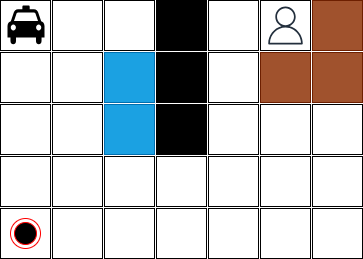
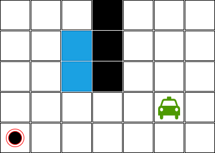
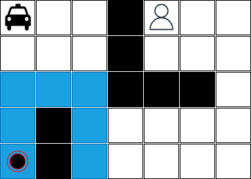
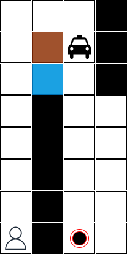
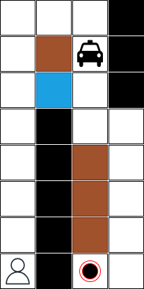
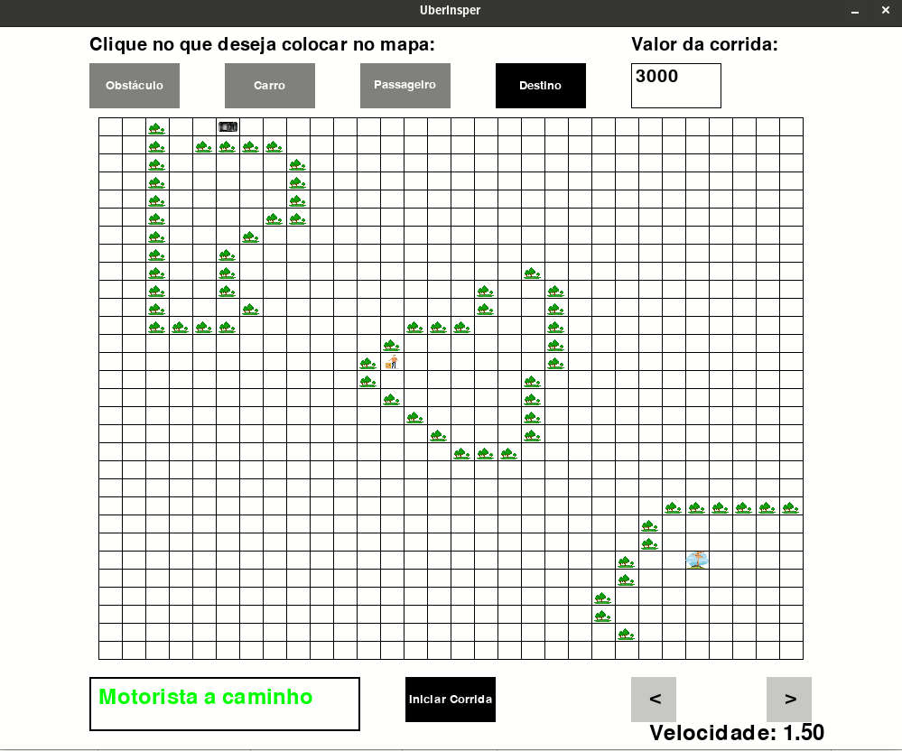

Taxi Driver
Neste exercício você deverá implementar um agente taxi driver. Um agente que é capaz de definir uma sequências de ações para pegar um passageiro em uma posição e deixá-lo em outra possição no mesmo mapa - um mapa que possui obstáculos, rios, asfalto e terra.
Por exemplo, considere o seguinte mapa:

Neste mapa:
- o táxi está na posição [0,0],
- o passageiro está na posição [0,5],
- o passageiro precisa ser levado para a posição [4,0],
- o mapa tem 5 linhas e 7 colunas,
- existem obstáculos no mapa que estão pintados em preto,
- existem rios no mapa que estão pintados em azul,
- existem áreas de terra que estão pintadas em marrom, e
- existem áreas de asfalto que estão pintadas em branco.
Sabemos que o táxi sabe executar as seguintes ações:
- ir para baixo;
- ir para cima;
- ir para esquerda;
- ir para direita;
- ir para a diagonal inferior esquerda;
- ir para a diagonal inferior direita;
- ir para a diagonal superior esquerda;
- ir para a diagonal superior direita;
- pegar o passageiro, e;
- liberar o passageiro.
Aspectos importantes sobre algumas ações:
-
a ação pegar o passageiro só pode ser executada se o táxi estiver vazio. Esta ação tem um custo de 5 unidades monetárias.
-
a ação pegar o passageiro pode ser executada em qualquer posição do mapa. No entanto, só vai ter o efeito desejado se o táxi estiver na mesma posição que o passageiro.
-
a ação liberar o passageiro só pode ser executada se o táxi estiver com o passageiro. Esta ação também tem custo de 5 unidades monetárias.
-
a ação liberar o passageiro pode ser executada em qualquer posição do mapa. No entanto, só vai ter o efeito desejado se o táxi estiver na posição onde o passageiro precisa chegar.
-
as ações
ir para baixo,ir para cima,ir para esquerda,ir para direitaeir para as diagonaistem o mesmo custo e este custo é de 1 unidade monetária se o táxi estiver no asfalto. -
o táxi é anfíbio, ou seja, consegue andar na água, mas o custo de andar na água é de 10 unidades monetárias.
-
o táxi consegue andar na terra, mas o custo de andar na terra é de 2 unidades monetárias.
Qual é a sequência de ações que o táxi precisa executar para pegar o passageiro e levar até o destino? Esta sequência de ações precisa ser ótima, ou seja, ter o menor custo.
A solução implementada precisa ser capaz de tratar diversas configurações com diversas dimensões. Por exemplo, a figura abaixo ilustra uma configuração possível onde o táxi está pintado de verde porque ele está com o passageiro:

A imagem abaixo é um mapa com as mesmas dimensões, mas com um número maior de obstáculos:

Entrega do exercício
- Este exercício deverá ser feito por equipes com até 3 integrantes.
- O prazo máximo para entrega é 11/04/2023 (sexta-feira) até às 22:00 horas.
- A entrega deverá ser feita via Github Classroom. O link para a entrega é https://classroom.github.com/a/I-L4Frvr.
- Cada equipe deverá entregar a implementação de um taxi driver e um arquivo de documentação (
taxi_driver_readme.md). - A implementação deve ter um arquivo de testes usando
pytest. - O projeto deve ter um arquivo de
requirements.txtque descreve os pacotes necessário para a execução. - Não teremos tempo em sala de aula para discutir o projeto. Portanto, é importante que a equipe se organize para discutir o projeto fora do horário de aula.
- O horário de atendimento pode ser utilizado para tirar dúvidas sobre o projeto.
Requisitos da implementação do taxi driver
A equipe deverá implementar no minímo dois arquivos: um arquivo python com a lógica do agente taxi driver e um arquivo de testes usando pytest. Qualquer entrega que não tenha os dois arquivos, o arquivo da solução e o arquivo de testes, terá nota I.
-
A configuração do mapa deve ser fornecida via arquivo texto. Deve ser um dos parâmetros da implementação. A posição do passageiro, o destino final e a posição do táxi também podem ser fornecidas via arquivo texto ou via parâmetro de chamada da aplicação - este aspecto fica à critério da equipe.
-
O arquivo de teste deve considerar os cenários ilustrados acima, mais os cenários ilustrados abaixo para que a equipe consiga um C como nota:


-
Para os dois (2) primeiros cenários a solução precisa encontrar resposta ótima na ordem de segundos. Se isto acontecer, a equipe tem garantida nota C. Caso contrário, se a equipe entregou todos os itens solicitados, mas as soluções não são boas o suficiente então a nota será D.
-
Se a solução encontrar resposta ótima na ordem de segundos para todos os cenários apresentados neste documento então a nota da equipe será C1.
-
O plano encontrado pelo agente taxi driver pode ser apresentado ao final da execução através de um print em modo texto. Neste caso a nota da equipe será C. Para alcançar uma nota B a equipe deverá implementar uma forma de visualização gráfica onde consegue ver o táxi em movimento e executando as ações. Recomenda-se o uso de
pygameou de alguma biblioteca gráfica para ambiente desktop. -
Para alcançar a nota A é necessário desenvolver um agente capaz de lidar com configurações mais complexas que as apresentadas aqui neste documento. Configurações com dimensões maiores e com um número maior de obstáculos, incluindo situações onde é impossível alcançar o objetivo. Além disso, a configuração do mapa pode ser feita de forma visual. Em outras palavras, o usuário poderá informar qual a dimensão do mapa, pintar os obstáculos, informar a origem do táxi, informar a origem do passageiro e o seu destino através de uma interface amigável.
-
Digamos que este agente é um motorista de aplicativo de transporte. Ele conhece qual será o custo da viagem, ou seja, ir até o passeiro, pegar o mesmo e depois deixar em um ponto específico. Adicione um parâmetro na interface da sua solução que é o valor pago em unidades monetárias pela empresa do aplicativo de transporte. Se o valor do custo da viagem for menor que o valor pago pelo aplicativbo de transporte então o agente executa a viagem, caso contrário ele não executa a viagem e informa que o custo da viagem é igual ou superior ao valor pago na interface da sua solução. Ao implementar esta funcionalidade e todas as outas anteriores a sua nota será A+.
Exemplo de interface gráfica esperada
Na imagem abaixo é apresentado um exemplo de interface gráfica esperada como resultado do projeto.

-
É importante lembrar que a equipe deve satisfazer também os requisitos de documentação para alcançar esta nota. ↩